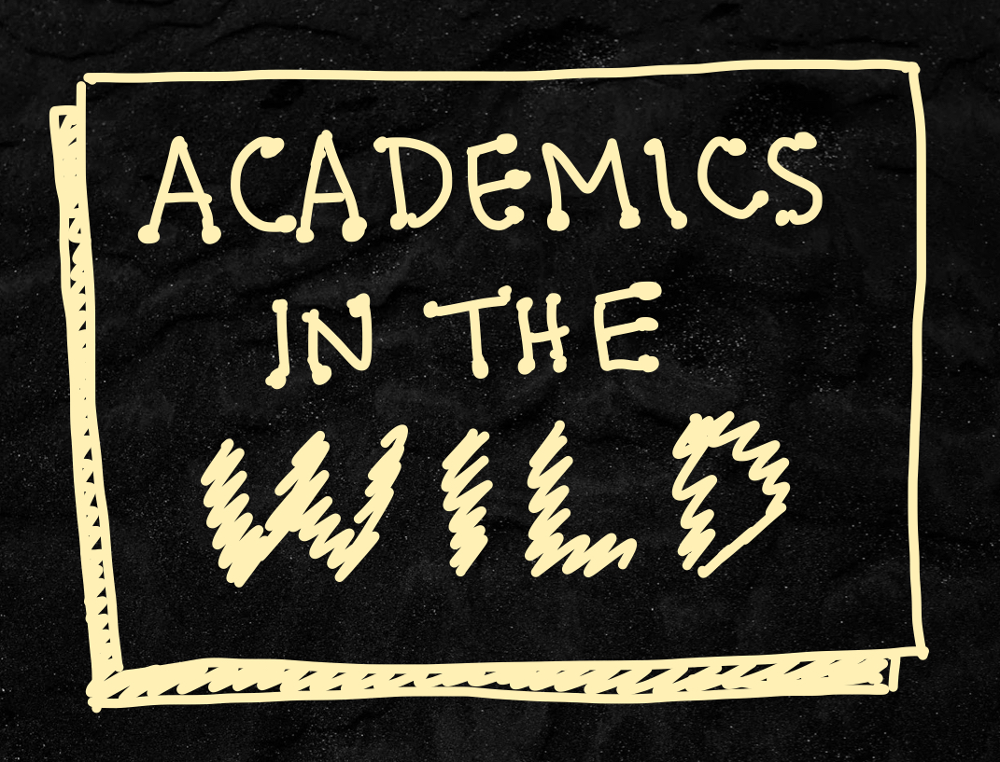

Academics in the Wild (AITW) is an initiative to support physicists and mathematicians in their journey from academia to industry. Are you currently on any stage of that journey? If so, we would love to have you on board!
The initiative started as a podcast called Physicists in the Wild where Aggie Branczyk interviewed physicists who turned their PhD training into diverse and often unconventional careers.
Now, we are building a free community, to be centred around the AITW Discord server, where we will regularly host informative and supportive events related to academia-industry career transitions.
Some events we plan to host are:
If you would like to join the waitlist for the community server, to join the initiative as a mentor and help steer the direction of the community, or simply to get more info as the initiative grows, click the "Sign up" button below.
See you soon!